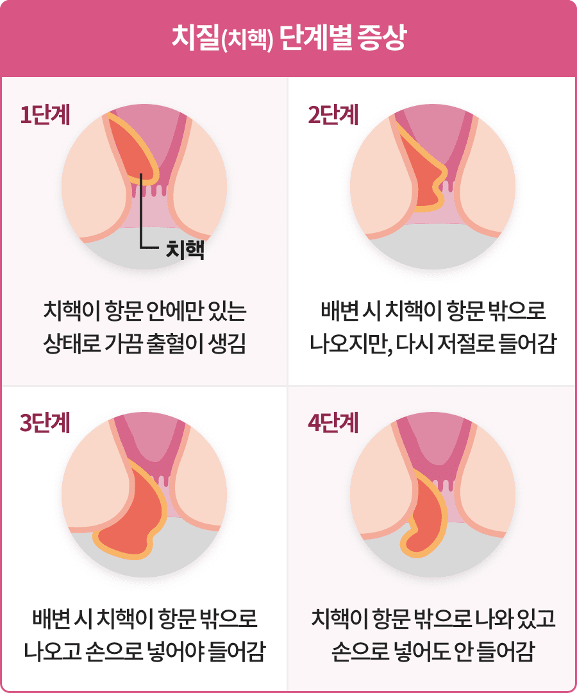

치질은 항문 주변의 혈관이 부풀어 오르고 조직들이 늘어져서 발생하는 질환입니다.
항문질환이기 때문에 쉽게 드러내지 못해 제대로 치료받지 못하는 경우가 많지만, 다빈도 수술 3위를 차지할 만큼 흔한 질병이기도 합니다.
[출처 : 국민건강보험공단 주요수술통계연보, 2021]

치질은 심한 정도에 따라 4단계로 나눠 설명할 수 있습니다.
1~2단계 정도의 증상이라면 좌욕, 배변 습관의 조절과 식이요법, 약물 요법 등의 보존 치료로도 호전이 됩니다.
3단계 이상으로 진행된 경우에는 수술을 고려해야 합니다.
소득의 파이프라인을 찾아라.
주된 소득 외에도 부동산 임대 수입, 주식 및 채권 투자 수익, 인지세 등 다양한 수익을 창출할 수 있습니다.
이렇게 여러 소스에서 지속적으로 발생하는 소득이 합쳐져서 소득의 파이프라인을 형성하게 됩니다.
소득이 충분하지 않다면 절약하는 것만으로 파이어족이 되는 것은 쉽지 않습니다.
부업 등 현실적인 방법을 적극적으로 찾는 것이 필요합니다.
금융상품을 똑똑하게 활용하라.
은퇴 이후에 자금이 고갈되지 않도록 인출 비율을 지키는 것도 중요합니다.
단기 수익을 쫓아 목돈의 은퇴자금을 활용한 투자를 감행하기보다는 계획적인 장기투자를 하는 것이 바람직합니다.
또한 필요 자산의 일부는 안정성을 고려한 금융상품을 활용하는 전략이 필요합니다.
저축 연습을 시작하라.
파이어족을 목표로 한다면 우선 원하는 목표를 구체화하고 실행 계획을 실천해야 합니다.
하지 만 큰 목돈도 소액의 저축 습관에서부터 시작됩니다.
10만 원씩 저축해서 1년간 120만 원을 모으는 경험을 해 본 사람이 1억 원의 목돈 만들기도 해낼 수 있습니다.
월 10만 원씩 저축하는 통장 만들기부터 시작하시기 바랍니다.